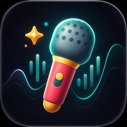
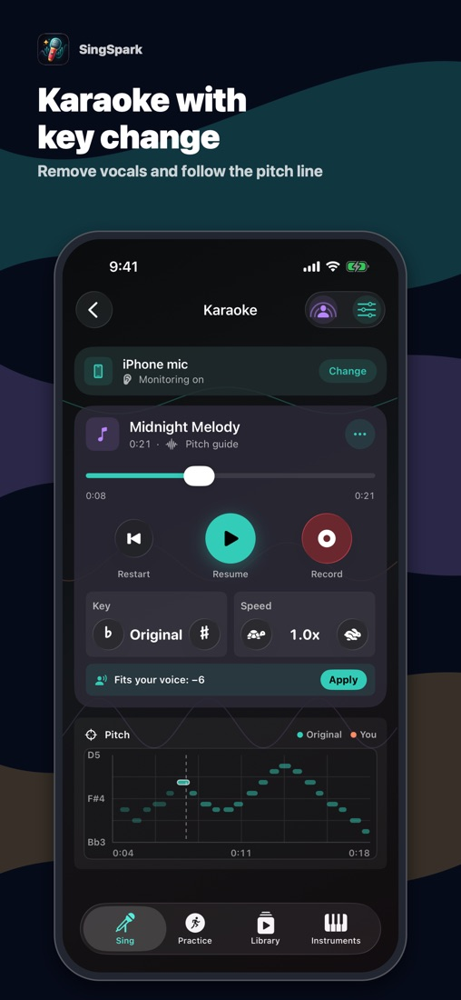
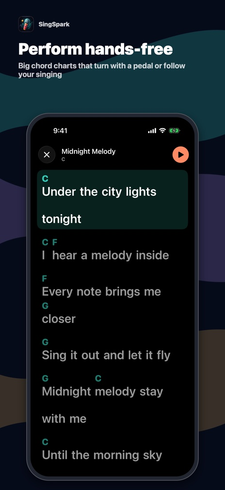
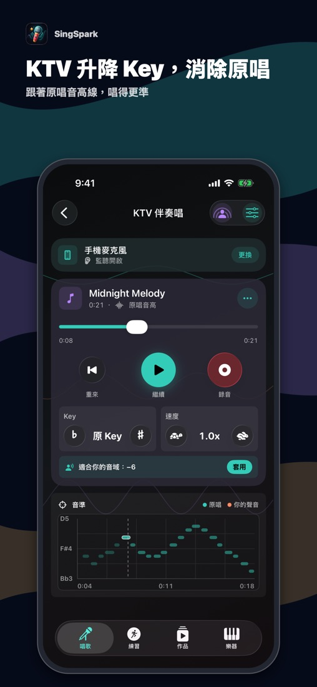
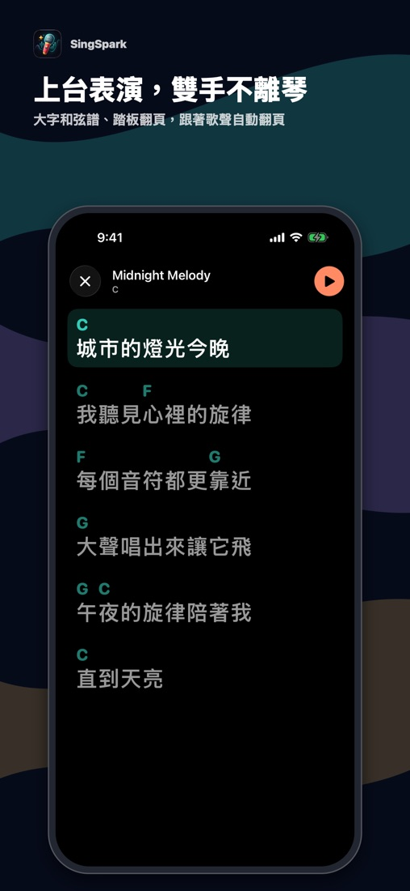

SingSparkSing in tune, and see it happen.
唱得準不準，現在就看得見。
A private singing coach for iPhone and iPad. Karaoke with your own songs and a live pitch line, a voice range test and vocal drills, then play, perform and film your covers.
iPhone 與 iPad 上的私人練唱教練。用自己的歌唱 KTV、看即時音高線、測出你的音域、做發聲訓練，還能彈唱、上台表演、拍翻唱影片。
- No ads
- No account
- Recordings stay on your device
- 45 languages
- 無廣告
- 無帳號
- 錄音只存在你的裝置
- 45 種語言




Everything you need to practice
練唱需要的，都在這裡
Karaoke with your songs
用自己的歌唱 KTV
Import a song, remove the vocals, change the key or speed and follow the original pitch line.
匯入歌曲，消除原唱、升降 Key 或變速，跟著原唱音高線唱。
Sing with your music app
邊聽歌邊唱
Play songs in Spotify, YouTube or any app while SingSpark shows how in tune you are.
用 Spotify、YouTube 等 App 放歌，SingSpark 即時看你唱得準不準。
My Voice
我的聲音
A 40-second test maps your range, suggests keys that fit, marks your comfort zone and finds pop songs for your voice.
唱 40 秒測出音域，推薦適合你的 Key、標出舒適區，並找出適合你的流行歌。
Vocal Academy in 3D
聲樂學院，3D 看懂發聲
12 lessons in 6 worlds: breath support, vocal fold closure, a relaxed larynx, mixing registers, resonance and vibrato. Each one explains the idea in plain words with a 3D model built from real anatomy and the research behind it, then you practice with live meters.
6 大世界、12 關：呼吸支撐、聲帶閉合、放鬆喉頭、換聲區混聲、共鳴與抖音。每一課先用白話講原理，搭配用真實人體模型做的 3D 與背後的研究，再跟著即時儀表練習。
Instruments and stage mode
彈唱與舞台模式
A tuner, automatic chord charts, accompaniment with drums and bass, and setlists on big charts that turn with a Bluetooth pedal or follow your singing.
調音器、自動和弦譜、加上鼓與貝斯的自動伴奏，還有歌單與大字和弦譜，用藍牙踏板或跟著歌聲翻頁。
Cover videos
翻唱影片
Sing to the camera with rolling lyrics and the pitch line, and end on your score and the song's difficulty.
鏡頭前跟著提詞歌詞唱，可加上音準線與特效，結尾秀出評分與歌曲難度。
Vocal Drills that stick
練到真的會的發聲訓練
Start with 8 beginner lessons; the marker locks on when you're in tune and each round ends from memory.
從 8 堂新手起步開始；唱準時指標鎖定，每輪最後憑記憶唱。
A strict coach for every take
每段錄音都有嚴格教練
Pitch, stability, timing and section scores, with the phrases worth practicing next.
音準、穩定、節奏與段落評分，告訴你下一句該練什麼。
Hear yourself clearly
聽清楚自己的聲音
Low-latency monitoring with the iPhone, wired, USB or Bluetooth mic. Plug in wired headphones and their mic is used automatically.
手機、有線、USB 或藍牙麥克風都能低延遲監聽；插上有線耳機自動改用耳機麥克風。
Built on how singing is learned
依照研究設計的練習方式
Real-time pitch feedback helps people sing in tune, but leaning on it too much hides what you have really learned. So SingSpark only corrects you when you leave the target band, ends every drill round with the guide hidden, and suggests when to move up or down a level.
即時音高回饋能幫助唱準，但太依賴它會看不出你真正學會了多少。所以 SingSpark 只在你離開目標範圍時提示修正、每輪最後把線藏起來憑記憶唱，並建議何時升降難度。
Free, Pro and Pro Academy
免費、Pro 與 Pro 學院
Free
免費
Every Pro feature is free for the first 3 days. After that you keep both singing modes, the live pitch line, 5 saved recordings, section loop, sync calibration and pop songs for your voice, plus one vocal drill, song analysis, coach review and song range check a day. World 1 of the Vocal Academy and every lesson's explanation and 3D are free too.
前 3 天可以免費使用所有 Pro 功能。之後仍可使用兩種唱法、即時音高線、保存 5 段錄音、段落循環、同步校準與適合你的流行歌推薦，並每天各試用 1 次發聲訓練、歌曲分析、教練分析與單曲音域查詢。聲樂學院的世界 1，以及每一課的說明與 3D，也都免費。
Pro: 1 month, 3 months or lifetime
Pro：月訂、3 個月或一次買斷
Key and speed change, vocal removal, unlimited recordings, drills and analysis, range checks for any song, coach-style polish and export, full setlists with hands-free page turns, drums and bass, and full-length cover videos. Subscriptions renew automatically and can be canceled anytime in your App Store account settings.
升降 Key 與變速、消除原唱、無限錄音、無限發聲訓練與分析、查任何一首歌的音域、教練式後製與匯出分享、完整歌單與免手翻頁、鼓與貝斯伴奏，以及完整長度的翻唱影片。訂閱會自動續訂，可隨時在 App Store 帳號設定中取消。
Pro Academy: monthly or yearly
Pro 學院：按月或按年訂閱
Everything in Pro plus the full Vocal Academy. The yearly plan starts with a free week. The Academy has no lifetime option; if you own Pro Lifetime you can add the Academy on its own. Subscriptions renew automatically and can be canceled anytime in your App Store account settings.
Pro 的全部功能，再加上完整的聲樂學院。年訂閱首週免費。學院沒有永久版；已經擁有 Pro 永久版的人，可以只加購學院。訂閱會自動續訂，可隨時在 App Store 帳號設定中取消。